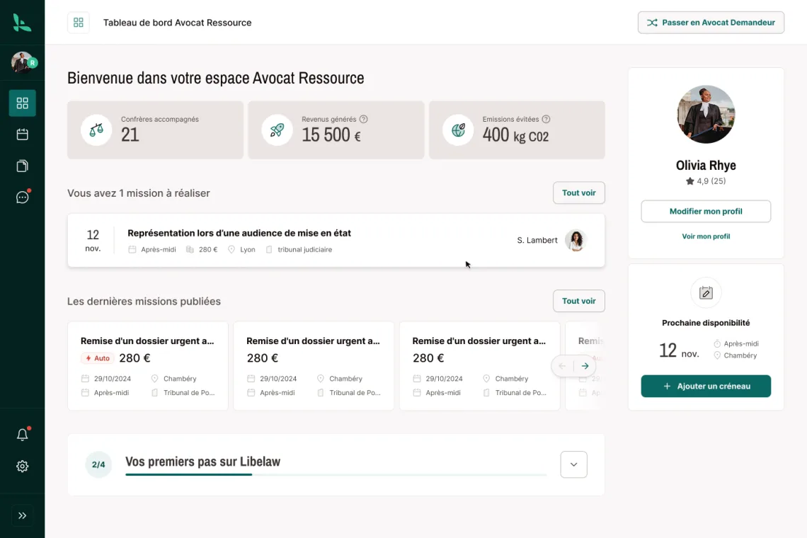
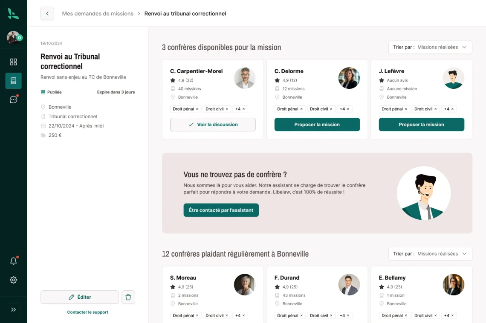
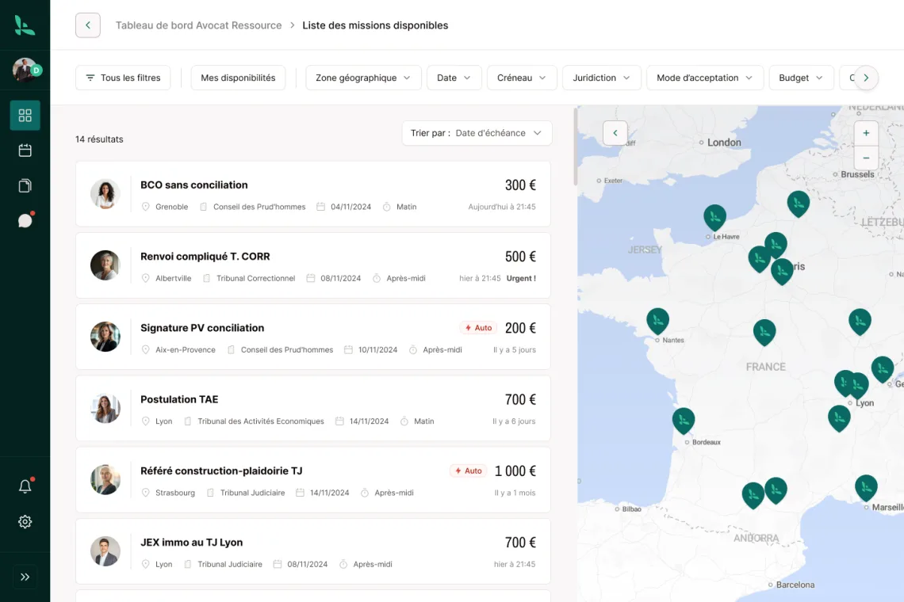
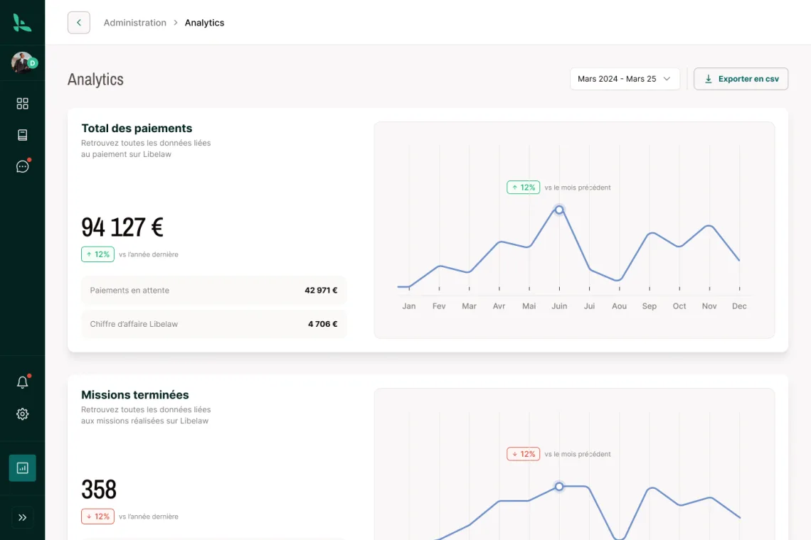

Le problème
Quand un avocat ne peut pas se rendre à une audience — agenda surchargé, juridiction éloignée — il doit trouver un confrère de confiance pour le remplacer : c'est la substitution, ou la postulation selon les cas. En pratique : des appels en cascade, des e-mails sans réponse, du temps facturable perdu, et aucune garantie de trouver à temps.
Libélaw a imaginé la réponse : une place de marché de confiance entre avocats, où l'on poste un besoin en quelques clics, fixe sa rémunération, et où la plateforme s'occupe du reste — mise en relation, échanges sécurisés, suivi des missions.
Ce qu'on a construit
- La gestion des missions de bout en bout : publication d'une demande, candidatures, attribution, suivi d'audience — le parcours métier complet, pensé avec de vrais avocats.
- Une messagerie sécurisée entre confrères, à la hauteur des exigences de confidentialité de la profession.
- Des tableaux de bord pour piloter l'activité : demandes, missions en cours, historique, statistiques.
- Web + mobile sur une seule base de code (Flutter) : l'avocat gère ses missions du cabinet comme du tribunal.




Les résultats
Libélaw a été distingué par l'écosystème : prix spécial du jury du CNB (Conseil National des Barreaux), 1er prix Lyon Startup – La French Tech (2024), et un projet labellisé BPI France / France 2030.
Ils le disent mieux que nous
« Ça fait 2 ans qu'on bosse avec la team Akago : livraison en avance, features bonus et exigence qualité au top. 💪 Une équipe qui n'a pas peur des sprints et qui délivre, foncez ! 🚀 »
[Prénom Nom] · [Fonction], Libélaw
Un projet similaire ? Place de marché métier, mise en relation de professionnels, workflows de validation : ce sont des briques que nous maîtrisons — voir aussi notre offre SaaS.